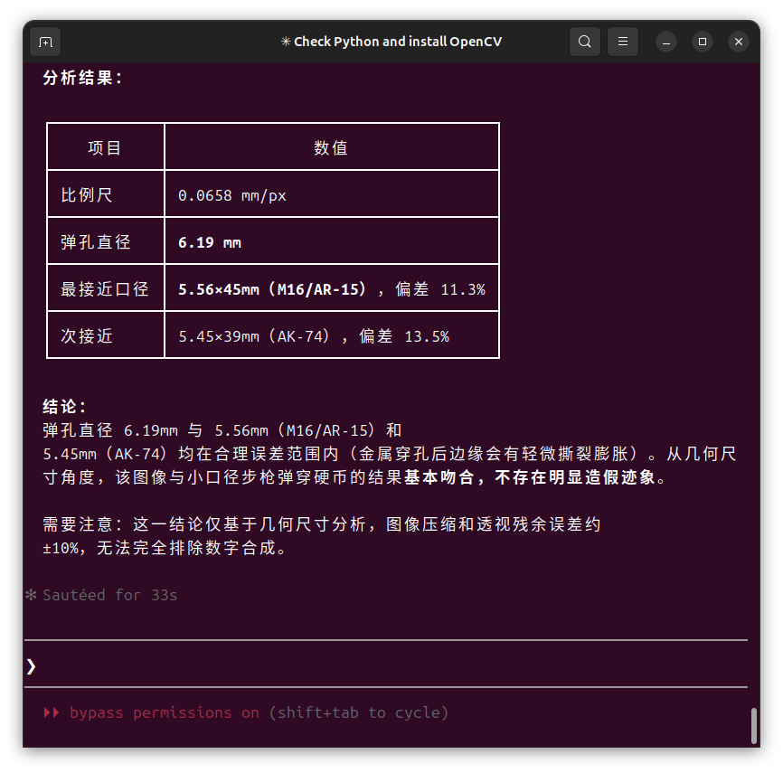
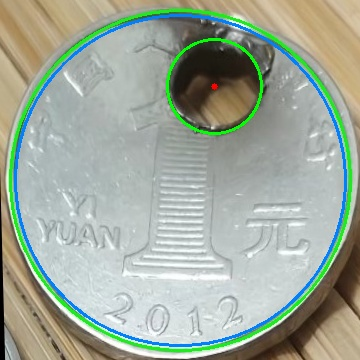

雪秋小可爱
@XUEQIUxka
@saanengoatmilk 蛤？
这么厉害


一只小咩🐐
@saanengoatmilk
@XUEQIUxka 图片里是有一个弹孔的硬币 有三枚硬币 拟合其轮廓 得到椭圆
然后求解仿射变换将其映射为正圆 得到无变形的硬币图片 硬币的直径是22.5mm
然后提取弹孔 计算直径 与常规枪弹口径对比 从而判断这个图片是否真实 只需要处理最上面的完整硬币 下面的不管 opencv-python实现 https://t.co/9rQCyE1hwX